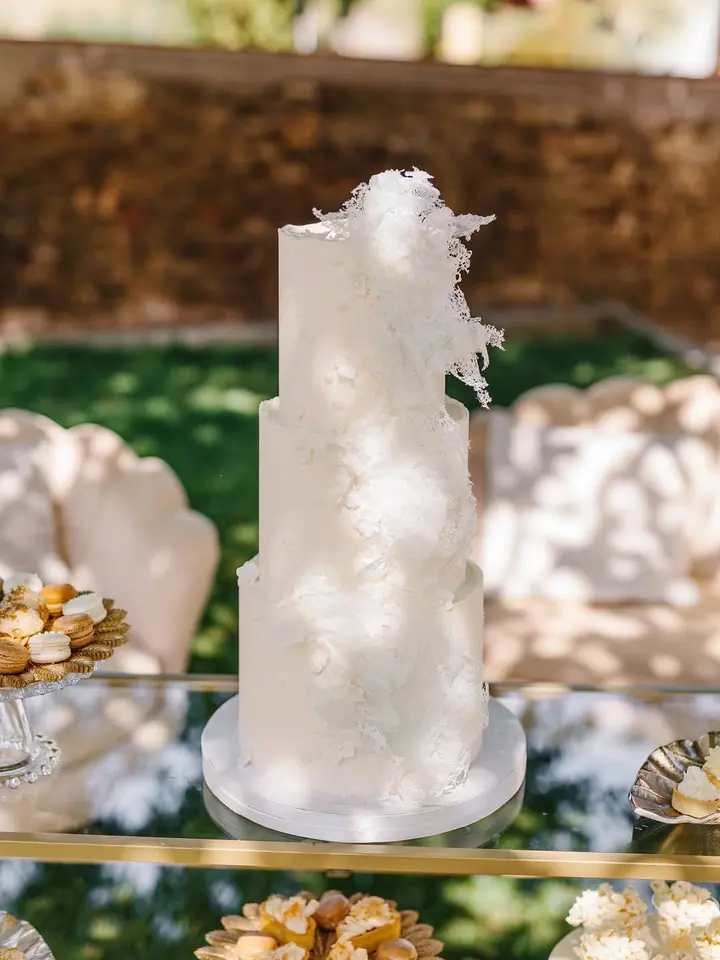
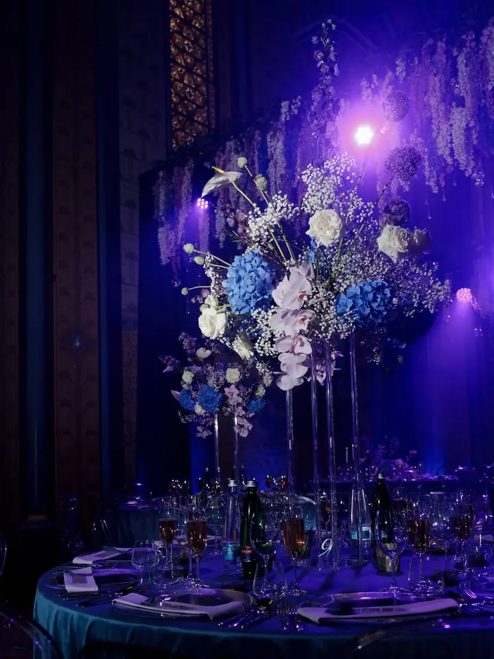
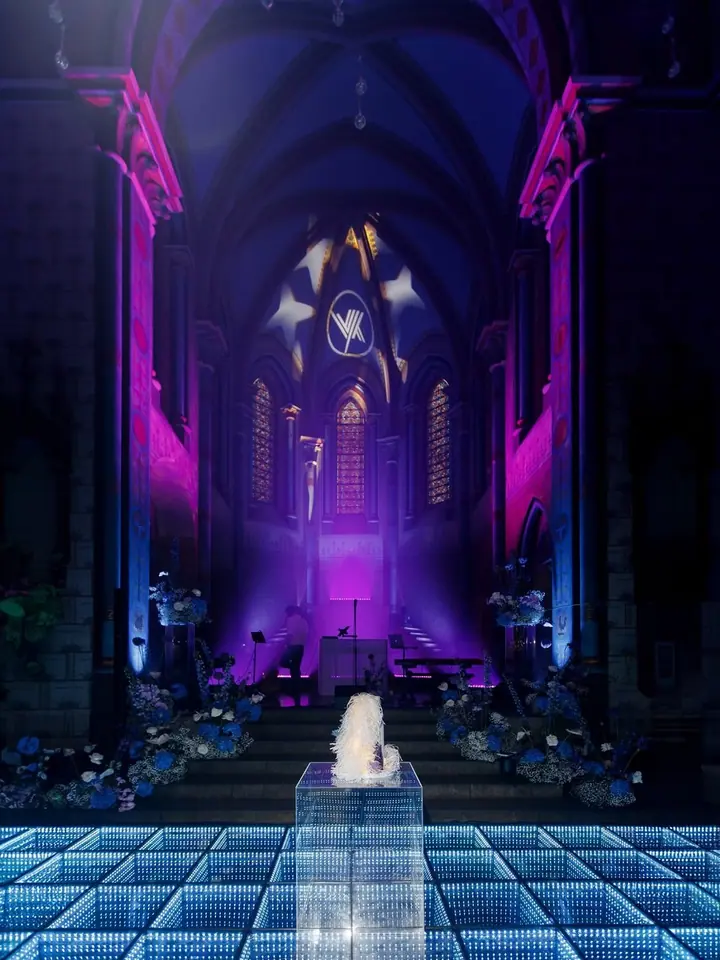
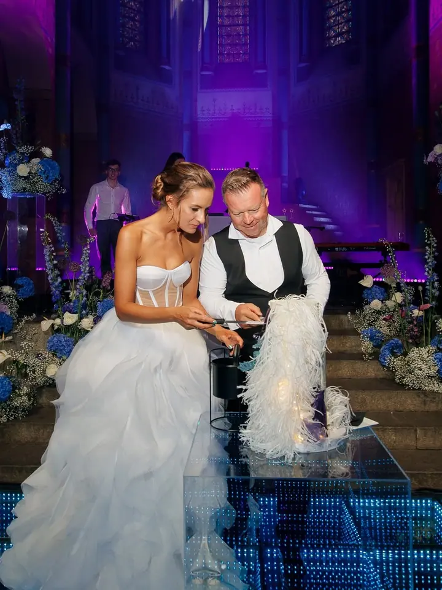
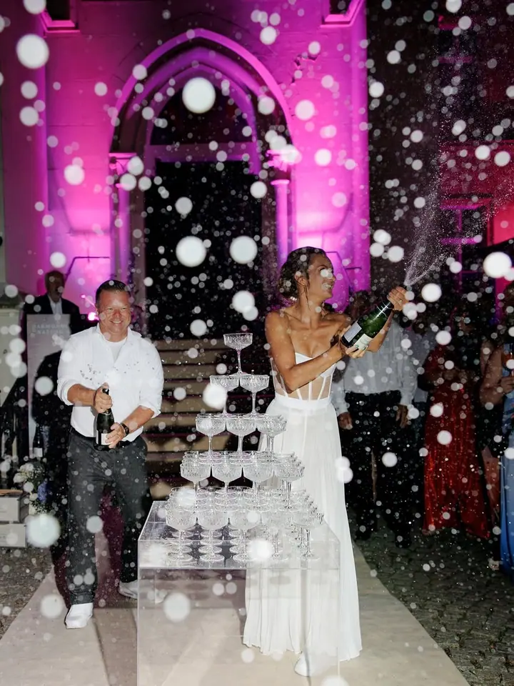
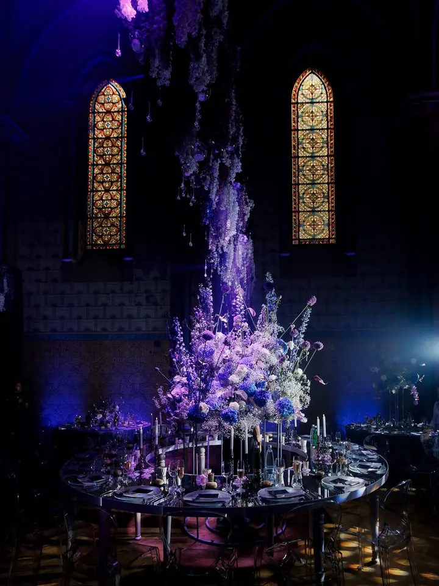
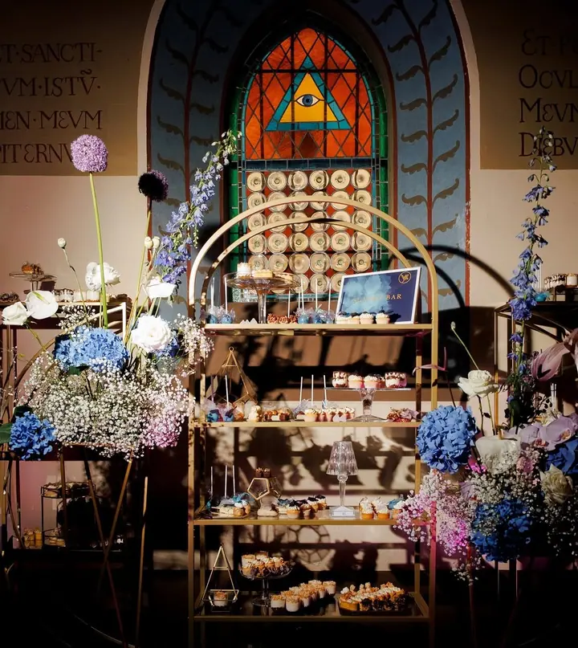
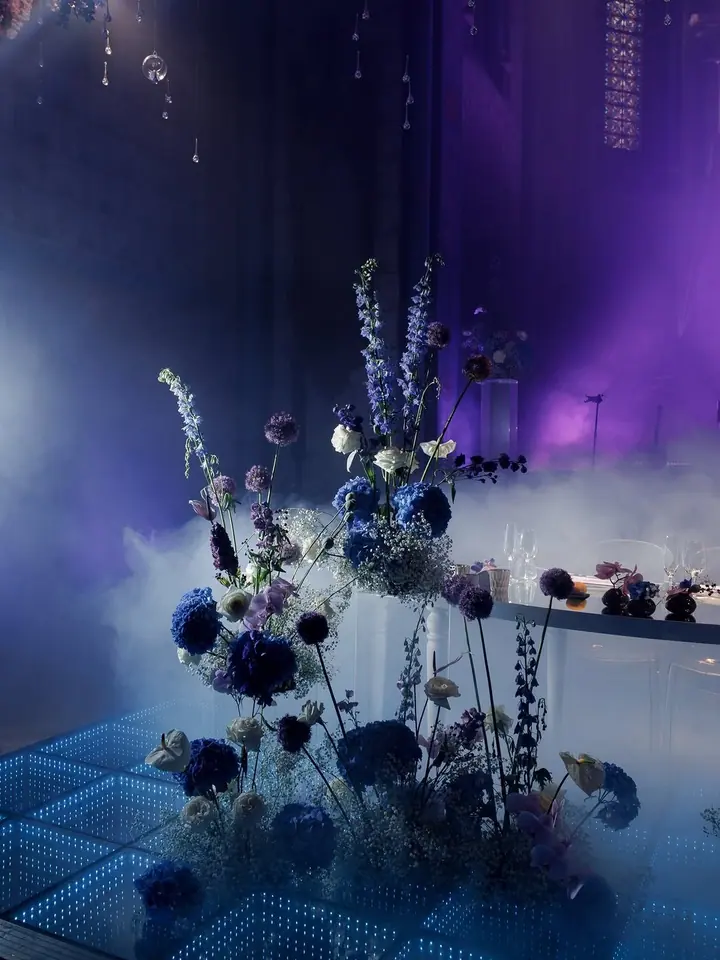
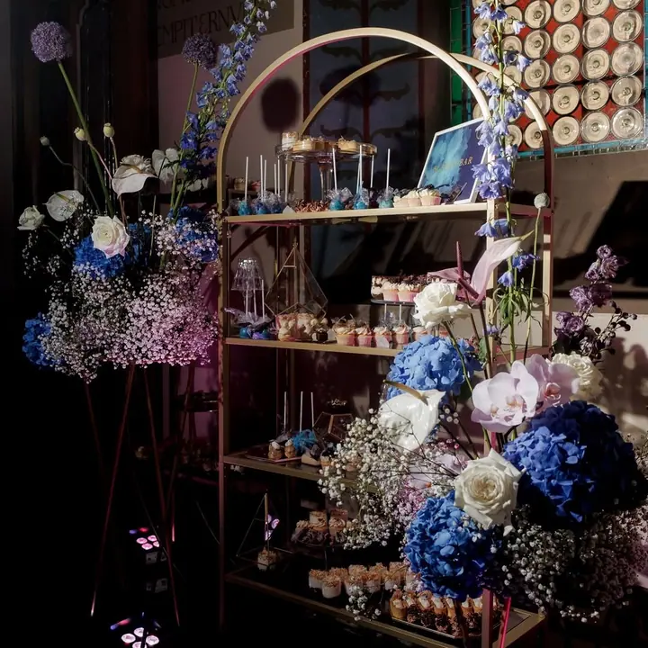

01 / 04
Svatební dorty
Moderní a elegantní svatební dorty s čistými liniemi, navržené podle vaší představy a místa svatby. Před objednávkou si můžete dorty vyzkoušet na ochutnávce.
Zeptat se na termín→








Svatební dorty, které jsou malým uměleckým dílem
Zeptat se na termín →(01) Ahoj
Jmenuji se Veronika Ertlová a pod značkou CupCakes Veronika tvořím luxusní a designové dorty a sladkosti. Navrhuji svatební dorty, celé sladké bary i firemní dárky ve vašem stylu . Záleží mi na tom, aby každý kousek potěšil oko stejně jako chuť.
4 151lidí sleduje mou práci na Instagramu
1 245příspěvků s fotkami a příběhy
(02) Co fotím
01 / 04
Moderní a elegantní svatební dorty s čistými liniemi, navržené podle vaší představy a místa svatby. Před objednávkou si můžete dorty vyzkoušet na ochutnávce.
Zeptat se na termín→02 / 04
Celé sladké bary s dezerty, cupcakes a cake pops sladěné s výzdobou vaší svatby nebo oslavy. Spolupracuji se svatebními a eventovými agenturami.
Zeptat se na termín→Dále nabízím
Reprezentativní sladkosti ve vašem firemním stylu a barvách, s logem a obalem na míru. Hodí se jako poděkování klientům, na VIP akce, výročí i teambuilding.
↗Ručně zdobené vánoční cukroví, mini cupcakes a sušenky se jménem v dárkových krabičkách. Mix 13 druhů stojí 1690 Kč za kilogram a objednávek přijímám omezený počet.
↗(04) Postup
Od první zprávy po hotovou galerii.
Krok 1 z 4
Pošlete mi datum a místo svatby, počet hostů, případné alergeny, představu o designu a jméno agentury, pokud ji máte.
Krok 2 z 4
Po telefonu spolu ověříme, jestli je termín volný, a probereme základní detaily vaší zakázky.
Krok 3 z 4
Krabičku s nejoblíbenějšími svatebními dorty a dezerty si vyzvednete u nás, nebo vám ji pošleme kurýrem.
Krok 4 z 4
Pak se potkáme osobně nebo online, doladíme vaši představu a připravím přesnější orientační kalkulaci.
Dort, který bude skutečnou perlou vašeho dne
(05) Za objektivem
V CupCakes Veronika spojuji moderní cukrářské umění, design a eleganci. Zakládám si na čistých liniích, propracovaném designu a harmonii chutí, ať jde o svatební dort, firemní zakázku nebo oslavu narozenin.
Spolupracuji s předními svatebními a eventovými agenturami, ale stejně ráda tvořím pro každého, kdo hledá kvalitu, originalitu a osobní přístup. Každý projekt beru jako jedinečný a vycházím z vašich přání.
Pro firmy připravuji sladké dárky v barvách a stylu jejich značky a s ověřeným grafickým studiem navrhujeme i obaly na míru. Na Vánoce pak peču cukroví a ručně zdobím sušenky se jménem, které se dají rovnou darovat.
Veronika
Veronika Ertlová · Luxusní svatební dorty a sladké bary
Ano, poptávky na svatební termíny pro rok 2026 přijímám. Nejrychleji se domluvíme, když mi po poptávce krátce zavoláte.
Pořádám malou a velkou ochutnávku, velká bude 13. února 2026 od 15 do 18 hodin. Cenu ochutnávky ještě upřesním.
Alergeny mi uveďte rovnou v poptávce. Konkrétní složení a alergeny k jednotlivým druhům vám ráda pošlu.
Ano, firemní design zapracuji přímo do sladkostí a dodržím vaše barvy. Dodám je zabalené v krabičkách, sáčcích nebo taškách, třeba i s vaším logem a vizitkou.
(07) Kontakt
Napište pár vět o tom, co si představujete, a termín, který se vám hodí.
vanoce@cupcakesveronika.cz